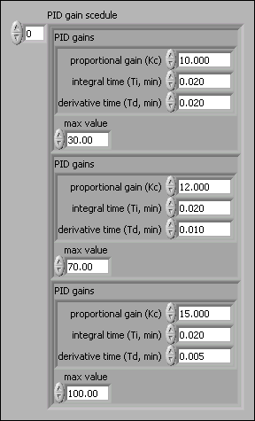
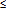

Gain scheduling refers to a system where you change controller parameters based on measured operating conditions. For example, the scheduling variable can be the setpoint, the process variable, a controller output, or an external signal. For historical reasons, the term gain scheduling is used even if other parameters such as derivative time, Td, or integral time, Ti change. Gain scheduling effectively controls a system whose dynamics change with the operating conditions.
You can use the PID Gain Schedule VI, to apply different sets of PID parameters for different regions of operation of your controller. Because most processes are nonlinear, PID parameters that produce a desired response at one operating point might not produce a satisfactory response at another operating point. The PID Gain Schedule VI selects and outputs one set of PID gains from a gain schedule based on the current value of its gain scheduling value input. For example, to implement a gain schedule based on the value of the process variable, wire the process variable value to the gain scheduling value input and wire the PID gains out output to the PID gains input of the PID VI.
The PID gain schedule input of the PID Gain Schedule VI is an array of clusters of PID gains and corresponding maximum values. Each set of PID gains corresponds to the range of input values from the max value of the previous element of the array to the max value of the same element of the array. The input range of the PID gains of the first element of PID gain schedule is all values less than or equal to the corresponding max value.
The following front panel shows a VI that uses the setpoint value as the gain scheduling variable with a default range of 0 to 100.

The following table summarizes parameter ranges specified in the previous image:
| Range | Parameters |
|---|---|
| 0 �SP� 30 | Kc = 10 Ti = 0.02 Td = 0.02 |
| 30 �SP� 70 | Kc = 12 Ti = 0.02 Td = 0.01 |
| 70 �SP� 100 | Kc = 15 Ti = 0.02 Td = 0.005 |